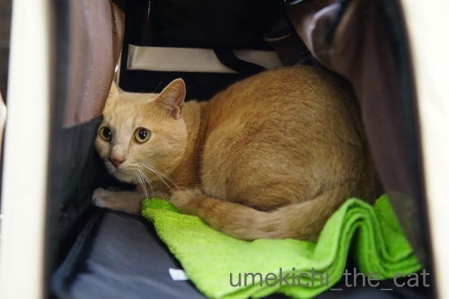
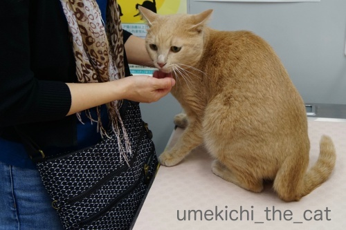
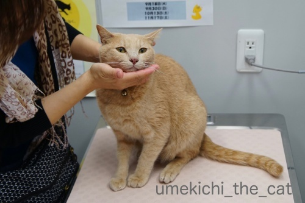
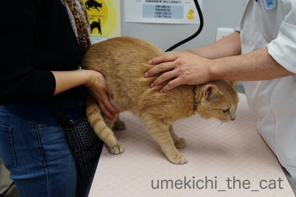
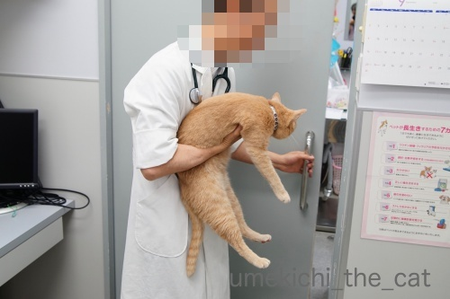

今年最後の病院とワクチン接種 [梅吉]
週末は梅吉の受診日でした。
ちょっと解説しますと梅吉は「高脂血症」で毎日薬を服用しております。
体重や年齢から見て生活習慣によるものではなく
脂肪をうまく代謝できない体質のようです。
経緯など興味のある方はタグの「病院」で関連記事が出てきます。
よろしければご覧ください＾＾

病院の待合室にて。キャリーの隅でちんまりしてます。
ちんまりしているだけで怖がったりしている様子はありません。
待合室を大きな犬が横切っても余裕です。度胸はあるんですよねw

診察台に乗せられると「わし かえるー！」とキャリーに戻ろうとしますよ（^_^;)
ちなみにこの日の体重は4850g。
ちょっと増加気味ですが朝のトイレ大小をしていないせいもあるかな。
それに夏場の体重増加は梅吉の先生によると自然なことなんだとか。
（結果オーライの性格なので「なぜ？」かは聞いたけど忘れちゃいましたw）
私自身が己の体重を考えてちょっとホッとしたかもwww
PCの前で同じくホッとしているあなた！仲間！仲間ー！！(*>艸<)

今日はちっくんを二回しなきゃいけないからがんばろうね！
なでなで・・・・・

先生が診察室に入ってくると後ずさる。

顔の向きが反対向いちゃったので写真は取れなかったのですが
この日は先生に「シャーーーーーッ！」
マイルドになるのも良いけどそのくらい勢いがあった方が梅吉らしくて良いと思いますよ＾＾

触診の結果も良好で採血に向かう梅吉。
「うーわー」鳴いて怒ってますが暴れたり噛みついたりはしないんです。
やっぱり肝が座っているのかな。

採血後戻ってくるとさっさとキャリーに入ります (⌒_⌒;
血液検査の結果、中性脂肪の値がもう少し数値が下がっていて欲しいところでしたが
上がってはいないのでまずまず良好。
体重増加の件も中性脂肪値が上がっていないということは
脂肪ではなく筋肉が増えているということなので良い傾向とのことでした。
（私はちょっと耳が痛いかもw）
この後ワクチンをちっくんして今年の診察は終了しました。
次回の診察予約をしたのですが、来年一月。
もう来年の話が出るようになってきましたねー。一年が早いです。
ワクチンをしたこともありこの日はどこへも行かずに梅吉の様子を観察。
ワクチン接種後だるそうにしていたのは初めてワクチンの時のみ。
去年は普段とまったく変わりなく過ごしたのですが今年は・・・・・
（16秒です）
おとーさんのなぞの呼びかけに大リアクションです！（今回はおっとの声が入ってませんが）
なんだろう、このハイテンションは・・・
昼寝もあまりせずうろうろしたり落ち着きなくいつもよりも甘えっ子でした。
夜にはすっかり落ち着いて何も問題はなかったのでご安心くださいね＾＾
外から聞こえる賑やかなお囃子と勇ましいかけ声にびびる梅吉w
イカ耳過ぎますよー！
我が家の前を秋祭りのお神輿さんが過ぎていったのでした。

カフェオレ色の梅吉

梅吉 2023年8月10日 永眠


梅吉と出会った譲渡会

犬猫の理由なき殺処分ゼロ
妄想広告
UMEKICHI 光

爆発的に早い！
時々攻撃的！
Thanks to Mr.Boss365
爆発的に早い！
時々攻撃的！
Thanks to Mr.Boss365

とりあえず安心結果でよかったー＾＾
心配してくれる家族がいるのは幸せな事なんだぞぅ？うめさん♪ｗ
お囃子に踊っているのかもしれませんねｗｗ（ﾜﾛﾀｗ
by 猫毬 (2018-10-15 00:20)
梅さまー病院おつかれさまでした！
おぉ、おぉ、ちゃーよりちょっと軽い・・・^^;（4.9kgムキムキです）
うちの獣医さんは、「夏減って冬増加する・・・」と言いますが・・・
なんだろう、気になります。
病院帰りでハイテンションは我が家にもひとりいます。
なんででしょうね！「わし、がんばったでー！」なのでしょうか？^^
by Ja-Kou66 (2018-10-15 00:27)
梅吉さん健康管理がうまくいってて偉いです。優しいおかーさんのおかげですね。喜びの(?)ぐるんぐるんもすごいです。
by zombiekong (2018-10-15 04:28)
これだけ素早く動けるのであれば＾＾
by ぽちの輔 (2018-10-15 06:44)
検査結果も良くて、筋肉も増えて♪
嬉しいですねぇ~(#^.^#)
安心して年が越せます！
ワクチン接種後もなんともなくて！
イカ耳の梅吉さん♪
おめめも見開いてますね(;^_^A
by きぃ (2018-10-15 07:38)
検査結果が良好で良かったです＾＾
体重が増えても梅吉さんの場合は「筋肉」だったんですね=(^.^)=
夏場に体重増加OK!と聞いて安心した私は
「筋肉」と聞いて「やばい」と思いました(⌒-⌒; )
このテンションの高さは、家に帰ってきた喜びの舞でしょうか( ^ω^ )
by ニッキー (2018-10-15 07:55)
お神輿にビビるのは、なんかわかる気がするー(^_^;)
by よーちゃん (2018-10-15 08:48)
ワクチン後の梅吉さん。
捕れたてのお魚のように、動きがピッチピチ！！
ご機嫌うるわしゅ～ようで(^^♪
そして私も、もれなくホッとした一人なのでした↓
なぬなぬ？夏場の体重増加は自然なことですって？？
だけど、中性脂肪がもう少し……？？？
うーーん、なかなか耳が痛いキーワード(*_*)
いずれにしても、結果オーライでヨカッタ！！
by morichan (2018-10-15 11:55)
梅吉くん4.85㎏ですか？フフフ、もしかするときなこも今それくらいかも～(*^^*)
by palpal (2018-10-15 15:26)
梅吉さん、結果が良好でよかったです。
チックンにも耐えてがんばりましたね。
筋肉が増える‥羨ましい～なんかそこだけ胸に刺さりました！＾＾；
一瞬の激しい動き！喜びの舞？＾＾
イカ耳もまんまるお目々もキュート～＾＾
by sana (2018-10-15 15:26)
こんにちは。
触診の結果も良好みたいで良かったです。
以前のブログで「高脂血症」体内の脂肪の燃焼させる薬を服用、知りませんでした。
確かに太ったりすると心配になりあますね。
ちぃさんの日頃のお世話が良いので、梅吉君が病気の感じ？微塵も感じませんでした。
小生は今年の猛暑で痩せましたが・・・
梅吉君の大リアクション！！持ってる「おっとさんの声？」凄いパワーです！！
使い道を間違えない様にお願いいたします！！
イカ耳正面顔！！ナイスショットです！？(=^･ｪ･^=)
by Boss365 (2018-10-15 15:34)
検査結果が良好で一安心ですね(^^)
でも、謎のリアクションには笑ってしまいました（失礼）
by kou (2018-10-15 17:02)
脂肪をうまく代謝できない体質にゃのか～
まぁ、私も最近そうだけどね（ﾟ□ﾟ）年のせいですw
by 英ちゃん (2018-10-15 17:21)
梅吉さん、後ずさりしていますね！
人もペットも健康診断は大切ですね(^^)
by ma2ma2 (2018-10-15 19:19)
ワクチンお疲れさまでした。
ウチのは来月、時々元気がなくなるので毎回心配で心配で。
毎年打たなきゃいけないのかいつも悩むんですけど、ケガで病院のお世話になることも多いし、外耳炎の時は毎週通わなければならなかったし、やっぱり必要かなと。
検査結果も良好でホッとしますね^^
夏場は暑くて動かないから太る子が多いと病院で言われたことがあります。
私はビール太り、そうそう夏には自然なことですよね？！(≧▽≦)
by ゆきち (2018-10-15 21:29)
検査結果良好とのことでひと安心ですね。
暴れない梅吉さん、さすがです。
お疲れ様でしたー。^^)
by yes_hama (2018-10-15 21:31)
見た感じぽっちゃりさんでもないのに~
でも人間様の高脂血症も体質なのか
痩せているのにそう、という知り合いがいます。
検査結果良好でよかったです。
最後の写真
「今の何!?」って聞いてるみたい。
by ふにゃいの (2018-10-15 22:26)
梅吉さん、病院で騒がない良い子です（子って笑）
採血やワクチン、梅吉さん疲れましたね。
ワクチンって、インフルエンザじゃないですよね（笑）
筋肉で体重増加は理想的ではありませんか。
羨やましいです。
筋肉つけたいです。
6パックなんてならなくて良いのです。
脂肪じゃなくて筋肉が欲しい（笑）
ちぃさん、体重が増えたのですか（笑）
by kiki (2018-10-15 22:42)
梅吉さん受診おつかれさまでしたー
我が家もこれからワクチンの時期です。
病院が全然嫌いじゃない猫と大嫌いな猫が居て
毎度騒動です(*_*)
by ryang (2018-10-16 00:52)
梅吉さん、お疲れ様でした^^
by ニコニコファイト (2018-10-16 06:51)
梅吉君おつかれさま^^
ちぃさん＆だんなさまも一安心ですね^^
体重増加、夏はOKなのね！
えーっと、そしたらこれから涼しくなるから
痩せていくに違いないわって、安心していいかしらｗｗｗ
by リュカ (2018-10-16 09:57)
検査とワクチン。お疲れさまでした(*^-^*)
安心できる結果が出るとホッとしますね。元気に過ごしてね♪
キャリーの中でも診察台の上でも！梅吉くん、肝が据わっています！
タラオの内弁慶っぷりを見せてあげたいです(^-^;
by emi (2018-10-16 12:11)
おつかれさま・・・ようがんばったなー♡
ｸﾞｯ!! (￣ε￣〃)ｂ
くりんくりんの大リアクションは、やっぱりナーバスになっていたのかな。。。
でも、ママがいるから安心して、これからも梅吉イズムで！
by Ginger (2018-10-16 12:59)
シャーーーーーッ！したんですね、梅吉さん。
良かった、元気で^_^
by riverwalk (2018-10-16 22:33)
ちぃさん、梅吉さん、お疲れ様でした＾＾
結果はまずまず良好とのことで、
安心しました(´▽｀) ホッ
梅吉くんのくるりんぱ、スゴイですね～( ´∀｀ )
取ってこい、もできるし、
芸達者だわ～♡(*^^)v
by マーヤ (2018-10-17 19:09)
猫毬さん＞
下僕の心配どこ吹く風♪なところも可愛いところです(^_－)☆
体調の心配＆管理は下僕がしっかり引き受けます！！
Ja-Kou66さん＞
ムキムキ！
梅吉も結構ガッチリしてますがムキムキ感は・・・
ちゃーくん陰ながら鍛えてますかw
夏に太るのは確か「実は夏の方が基礎代謝が落ちる」と
言ってたと思うのですが。
暑くて動かなくなるのも体重増の一因かもしれませんね。
（耳が痛いw）
病院後ハイテンション仲間が！
興奮して眠れない子供みたいですよねwww
zombiekongさん＞
体調管理は比較的上手く行っているようです。
もう少しお薬の効果が出て欲しいのですが
サプリメントみたいな薬なので気長に付き合っていきまーす＾＾
ぐるんぐるんの躁状態はますますアホになったんじゃないかとあせりますwww
ぽちの輔さん＞
元気過ぎて変なウイルスが脳に！？って
心配になる時があります (⌒_⌒;
きぃさん＞
安心して年を越すにはまず「うちの子」の健康ですよね＾＾
これからもしっかり体調管理をしてきいますよー。
元気でいてくれて何よりです！！
ニッキーさん＞
ニッキーさんはランニングで鍛えてらっしゃるし
ゴッドマザー様は伴奏チャリで走っていらっしゃるし
あまり問題はないような気もしますが・・・
脂肪↑ 筋肉↓になりがちですものね。わたしもやばいですwww
病院後は落ち着きのなさにどうかしたんじゃないかと心配になりましたが
ひと暴れするとパタリと寝ておりました＾＾
よーちゃん＞
お囃子も人の声もでっかいですものね！
夏・秋にお神輿が出るとはいえ
年に２回のことなのでどうにも慣れないようですw
morichanさん＞
あまりのピッチピチにアホウィルスに感染したのかと思いましたよw
夏は暑くて動かない（動けない）ですからねー！
これからの季節、お互いがんばって色々（笑）落としていきましょ！！
と私と同類と決めつけてみるwww
梅吉はありがたいことにお薬が効いているようです＾＾
palpalさん＞
おおお！ということはきなこちゃんのダイエットは順調なのね＾＾
sanaさん＞
筋肉、お年頃になると（笑）眩しいワードですよねw
若い時のように簡単には増えない・・・脂肪は簡単なのにー。
採血とワクチン、二回のちっくん頑張ってくれました！
ワクチンは診察室でキャリーに入った状態でしたのですが
針の刺さった瞬間だけ「う〜」って唸ってあっさり終わりました＾＾
Boss365さん＞
そうなんです、梅吉こう見えて持病持ちなんです。
もっとも服用している薬もサプリメントみたいなものだし
今何か症状があるわけでもないので深刻とは思っていません。
ただ、加齢と共に何か余病が出ることは心配していますが・・・
おっとの謎の呼びかけ、
動画を見た皆さんが謎のハイテンションにならぬよう
音声オフにしました（嘘ですw）
kouさん＞
梅吉に何事もないのが一番嬉しいですね＾＾
どういう感情があのリアクションになるのか
梅吉に聞いてみたいですwww
英ちゃんさん＞
私も脂肪をうまく代謝出来ないお年頃なので仲間ですね＾＾
梅吉のお薬、飲んじゃおうかしら・・・
ma2ma2さん＞
梅吉は持病のおかげでちゃんと健康診断出来てラッキーかも＾＾
何かないと病院からは足が遠のいちゃいますよねw
ゆきちさん＞
ワクチンの後元気が無くなっちゃうこてつくんの様子、
ワクチンって必要なの？のゆきちさんのブログ記事よく憶えています。
ぐったりしている様子を見たら葛藤してしまうのも当然ですよね。
来月のワクチンは、あれ？ぜんぜん大丈夫でした！となることを願っています。
人間の場合、夏のビールとアイスクリームは必要悪のような・・・
これらがないと暑い夏、やり過ごせませんよねw
これからの季節頑張って落としましょー！！
yes_hamaさん＞
夏場は（梅吉にしては）活動量も減っていたので
採血の結果はちょっと心配だったのですが・・・
いろいろ条件の厳しい夏をまずまずの結果で乗り切れたので
本当に安心しました＾＾
ふにゃいのさん＞
ぽっちゃりを通り越している人でも
全くの健康体、の人もいますものね！
梅吉もぽっちゃりさんの時期があったのですが（苦笑）
ダイエット後も中性脂肪値は高い、むしろ悪化したので
お薬を飲ませることになりました。
今後もまずまずの結果で経緯して欲しいです！
kikiさん＞
おっとと遊ぶ時は別ですが（笑）
梅吉は暴れたり人を攻撃したりはしない子のようです＾＾
病院でも
「梅吉くんはわーわー言うけどいい子やな」という
先生はじめスタッフの皆さんの感想のようですよw
私は体重はほとんど増減しない方なのですが
体のラインが何と言うかあれ（笑）なんですよwww
筋肉が脂肪に変わる過程、観察できます(*>艸<)
秋は再び筋肉への変換を目指します！
rynagさん＞
rynagさんちのにゃんずさんはおとなからこどもまで
バラエティーも豊かですものね！
多頭飼いのワクチン接種は体力も必要そうですが
あっちへこっちへ気を使って神経も磨り減りそうですw
無事に終わりますように＾＾
ニコニコファイトさん＞
梅吉、がんばりましたよー＾＾
疲れているからゆっくりすれば良いのに
謎のハイテンションなのが梅吉らしいところですw
リュカさん＞
お薬を飲み始めてから初めての夏越し、
運動量が減ったりいろいろ心配でしたが
うまく乗り切れて数値も悪化することなく一安心でした＾＾
これから痩せていく・・・是非是非そう願いたいものですが
美味しいものがたくさん登場するので
カロリー消費活動も積極的にせねば！と思ってますwww
emiさん＞
毎回検査結果を聞くのはドキドキなんですが
今回も無事にクリアで出来て本当に安心しました＾＾
梅吉が頑張ったんだから私も頑張らねば・・・なんて思ったりして（笑）
タラくんは石のように固まっちゃうのかしら？
それはそれで見ていて気の毒なような
日頃のやんちゃぶりと比較して笑っちゃうような、ですねw
Gingerさん＞
病院からの緊張感から解放されたのでしょうか！
なるほど！キレッキレの動きの理由はその辺なんですねw
梅吉がちゃんと梅吉でいられるようにサポートがんばりまーす！
riverwalkさん＞
はい＾＾ちゃんとシャーーーーーーッ！出来ましたー（笑）
これがないと病院に来たなって感じのしない飼い主ですw
マーヤさん＞
病院に行く途中に芸事の神様がいらっしゃるのですが
毎回ちゃんとお参りして行くので
今後もますます芸に磨きのかかるかもしれない梅吉です ( ´艸｀)
by ちぃ (2018-10-17 21:27)